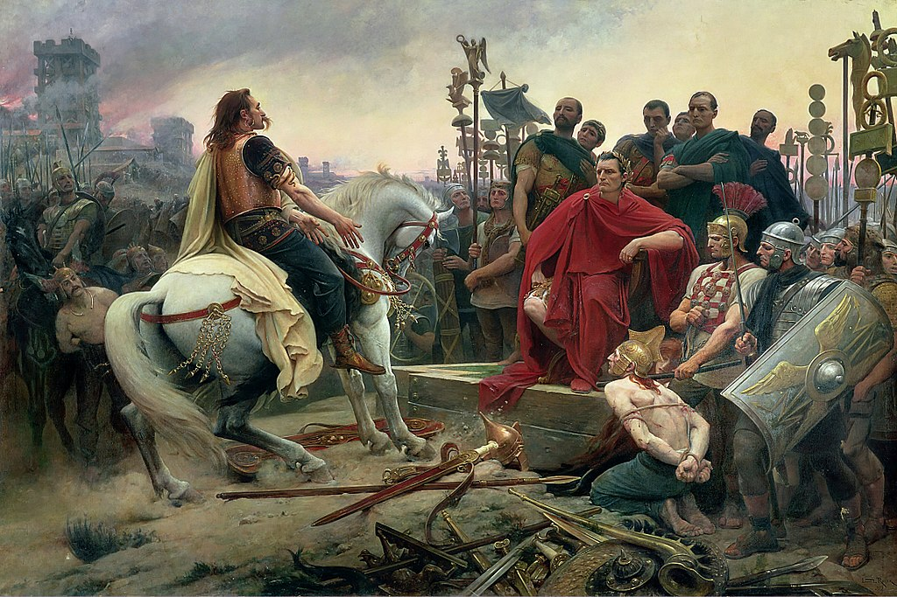
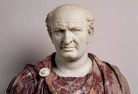

Regresar
Emperadores
Julio Cesar

(Cayo Julio César; Roma, 100 - 44 a. C.) Militar y político cuya dictadura puso fin a la República en Roma. Procedente de una de las más antiguas familias del patriciado romano, los Julios, Cayo Julio César fue educado esmeradamente con maestros griegos.Julio César pasó una juventud disipada, en la que empezó muy pronto a acercarse al partido político «popular», al cual le unía su relación familiar con Cayo Mario.
Tito Flavio Vespaciano

Tito Flavio Vespasiano (en latín: Titus Flavius Vespasianus; 17 de noviembre de 9-23 o 24 de junio de 79) fue emperador romano desde el año 69 hasta su muerte, gobernando bajo el nombre de Emperador César Vespasiano Augusto (Imperator Caesar Vespasianus Augustus). Fue el fundador de la dinastía Flavia, la cual gobernará el Imperio romano hasta el año 96. Le sucedieron sus hijos Tito (r. 79-81) y Domiciano (r. 81-96). Descendía de una familia del ordo equester que había alcanzado el rango senatorial durante los reinados de los emperadores de la dinastía Julio-Claudia. Siendo designado cónsul en 51, ganó renombre como comandante militar, destacando en la invasión romana de Britania (43) al mando de la Legio II Augusta. Comandó las fuerzas romanas que hicieron frente a la primera guerra judeo-romana del año 66. Cuando se disponía a sitiar Jerusalén, la capital rebelde, el emperador Nerón se suicidó, sumiendo al Imperio en un año de guerras civiles conocido como el Año de los cuatro emperadores. Tras la rápida sucesión y fallecimiento de Galba y Otón y el ascenso al poder de Vitelio, los ejércitos de las provincias de Egipto y Judea proclamaron emperador a Vespasiano el 1 de julio de 69. En su camino hacia el trono imperial, Vespasiano se alió con el gobernador de Siria, Cayo Licinio Muciano, quien condujo las tropas de Vespasiano contra Vitelio, mientras el propio Vespasiano tomaba el control sobre Egipto. El 20 de diciembre, Vitelio fue derrotado y Vespasiano fue proclamado emperador por el Senado. De la información que ha sobrevivido del reinado de Vespasiano, tras sus diez años de gobierno destaca el programa de reformas financieras clave que promovió, tan necesario tras la caída de la dinastía Julio-Claudia, su exitosa campaña en Judea y sus ambiciosos proyectos de construcción como el Anfiteatro Flavio, conocido popularmente como el Coliseo.